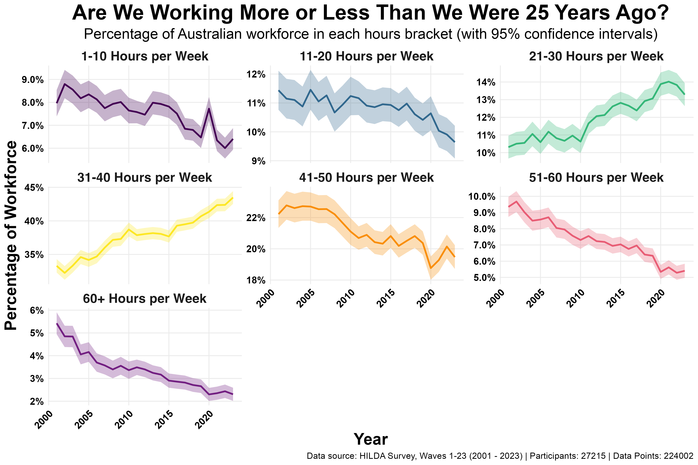

In 1930, economist John Maynard Keynes famously predicted that by 2030, technology would advance so much we'd only need to work a 15-hour week. And even that was just so we wouldn't get bored. With 2030 just around the corner (relatively speaking), how are we tracking?
The answer is a little complicated. Just looking at average hours can be misleading, because a rise in part-time work could pull the average down without full-time workers' hours actually changing.
We analysed data from the HILDA survey, covering over 220,000 observations of working hours from over 27,000 workers between 2001 and 2023. We broke the workforce into seven different working-hour brackets to see how the percentage of workers in each bracket has shifted over time.
The results (shown in the graph below) reveal three key findings:
- The 40+ Hour Week is Fading: The proportion of the workforce doing more than 40 hours per week has steadily declined. In 2001, employees were more likely to work 40+ hours than to work between 31 and 40 hours per week. Today, it's about 1.6 times more common to work 31–40 hours than over 40.
- Fewer People Working Very Long Hours: The proportion of people working 50+ hours per week has roughly halved since 2001.
- A Decline in Short-Hour Roles: The proportion of people working less than 20 hours per week has also slightly decreased. In many cases this may be a good thing, as this is often associated with underemployment (people wanting more hours than they're getting).

Together these trends have created a 'great compression' of working hours, where fewer people are at the extremes of either very long or very short weeks, and more are concentrated in the middle. Today, more than half of the population works between 20 and 40 hours per week.
We are seeing a slow but steady reduction in working hours, with a shorter week gradually becoming the new standard, at least in Australia. However, we're still a long way from the 15-hour week originally envisioned by Keynes. In fact, at the rate we've been going for the last 25 years, it'll be 2293 before we get there.